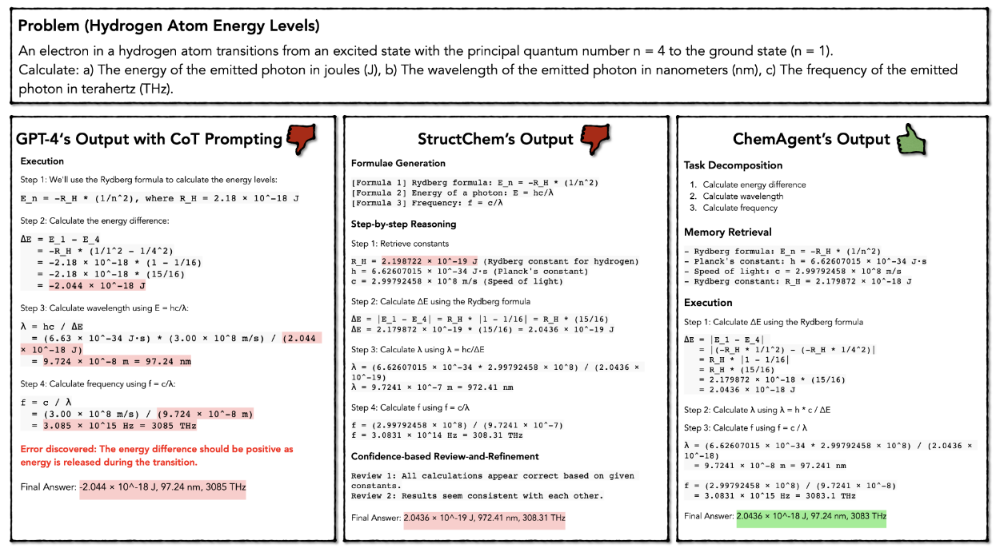
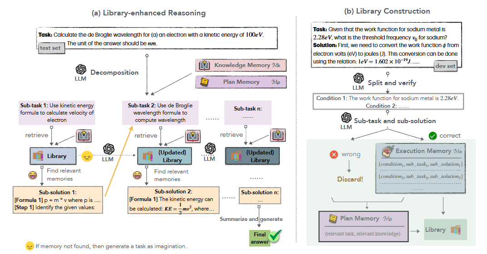
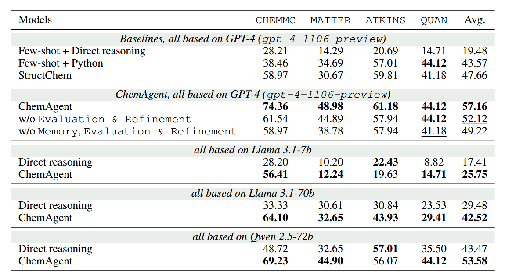

在化学领域，复杂的多步骤推理常令科研人员头疼。一个公式的微小误差可能导致整个计算链崩溃，这种精确性要求使得传统人工智能模型在化学推理任务中屡屡碰壁。即便是当前最先进的GPT-4模型，在处理专业化学公式、代码执行和复杂推理步骤时，仍存在明显短板——错误常数引用、单位转换混乱、代码语法错误等问题频发，甚至简单的链式思维（CoT）方法也难以避免“一步错步步错”的困境。
耶鲁大学团队的最新研究成果ChemAgent ，为解决这一难题带来了曙光。这项发表于2025年的研究提出了一种革命性框架，通过构建动态自更新的“化学知识库”，让大语言模型像人类专家一样积累经验、迭代优化。其核心在于将复杂化学问题拆解为原子化的子任务，并将每个子任务的解决方案结构化存储。当遇到新问题时，ChemAgent会从知识库中检索相似案例，结合规划、执行和知识三重记忆，动态生成精准推理链。
实验数据令人振奋：在SciBench化学数据集上，ChemAgent将GPT-4的准确率最高提升了46%，平均提升达37%。即使是开源模型如Llama3-70B，性能也实现了13%的显著飞跃。更值得关注的是，这一系统展现了类似人类“越练习越聪明”的特质——随着解决的问题增多，知识库不断自我丰富，模型表现持续优化，最终准确率比基线方法高出近15%。

👆氢原子能量转换问题求解方法的比较。该图说明了三种不同的方法：（a）显示了标准思维链方法存在计算误差的问题（在步骤3和4中）。（b）演示了StructChem方法，该方法具有公式生成和逐步推理功能，但由于不正确的常数和不正确的单位转换（在步骤1和4中）而失败。（c） 介绍了ChemAgent解决方案，其特点是任务分解、从库中检索记忆和推理，从而得出准确的最终答案。
ChemAgent的“智能进化”秘籍，藏在三大记忆组件中：
- 规划记忆像战略指挥官，存储解决复杂问题的高层策略；
- 执行记忆如战术手册，记录具体子任务的详细解决方案；
- 知识记忆则是化学原理的活字典，实时生成临时参考。

👆整体框架的示意图 它包含（a）库增强推理和（b）库构建。（a）说明了ChemAgent如何利用库来解决测试集的新任务。（b）演示了开发集上库的构建，包括计划内存Mp和执行内存Me。
以氢原子能级跃迁问题为例，传统方法常因常数单位混淆或公式套用错误导致失败，而ChemAgent通过任务分解、记忆检索和动态验证，精准定位每一步所需公式，最终输出无懈可击的Python计算代码。这种“分而治之”的策略，不仅提高了准确性，还让错误更容易被检测和修正。
DECOMPOSITION AS ATOMIC BLOCKS【分解为原子块】
人类问题解决者自然会将复杂的化学问题分解为更小、可管理的子任务。这种分解增强了对单个组件及其相互作用的理解，有助于以结构化的方式解决原始问题。这些子任务不仅改善了推理过程，而且在执行内存中起着原子构建块的作用，每个子任务都与相应的子解决方案配对。这种分解的关键特征包括：
- 分层分解：使用存储在计划记忆中的策略，我们将复杂的化学问题分解为分层子任务。如果一个子任务太难完成，它会被进一步分解，直到LLM可以在一个步骤中执行为止。我们存储每个分解的子任务及其中间子解决方案，从而能够直接检索未来类似问题的解决方案。这种分层方法确保每个子任务都作为一个独立的原子块，帮助解决未来的问题。
- 结构化子任务：为了最大限度地提高分解效率，子任务分为四个不同的部分：（i）定义特定问题的任务查询，（ii）概述明确目标的子任务目标，（iii）详细说明解决子任务方法的分步解决方案，以及（iv）建议潜在方法的解决方案指南。
- 原子块作为内存：分解的子任务充当内存的构建块。识别和回忆类似的问题可能具有挑战性，但子任务通常具有共性，这使得利用过去的经验变得更加容易。这些原子块还可以作为少镜头提示的示例，规范响应格式，并支持整体问题解决过程。
实验结果

👆 在四个数据集的测试集上的性能：QUAN、CHEMC、ATKINS和MATTER
ChemAgent在各种数据集和设置中始终优于其他基线。具体而言，就平均得分而言，ChemAgent比StructChem提高了9.50%（47.66比57.16），StructChem增加了2.93倍，比直接推理提高了37%（19.48比57.16，2.93倍）。值得注意的是，不同数据集的性能增益各不相同。在CHEMC数据集中，我们的方法表现出最大的改进，与直接推理设置相比增加了46%（28.21比74.36）。其次，研究结果也突显了记忆在我们图书馆中的关键作用。在所有情况下，配备内存的框架版本始终优于没有内存的版本。具体而言，平均得分绝对提高了2.90%。这强调了记忆在保留和利用过去信息以提高解决化学问题的准确性和可靠性方面的重要性。此外，在使用更强的LLM时，评估和优化模块起着重要作用。例如，与仅使用内存的ChemAgent相比，将评估和优化与GPT-4结合使用可使ChemAgent的性能提高5.04%。总之，ChemAgent在各种LLM主干上表现出卓越的性能，突显了库系统、内存设计和评估模块在提高解决问题能力方面的至关重要性。
这项突破的意义远超实验室——从药物分子设计到新材料开发，需要精密计算的化学领域都将受益。研究团队已开源代码，未来或可扩展至物理、数学等科学领域。
目前，ChemAgent已展现出强大的跨模型适应性，GPT-4等大模型获益最显著，这预示着随着基座模型的持续进化，科学智能的边界将被不断打破。或许不久的将来，化学家的实验室里，会多一位24小时在线的“AI科研助手”，用永不疲倦的精确计算，加速人类探索物质世界的脚步。